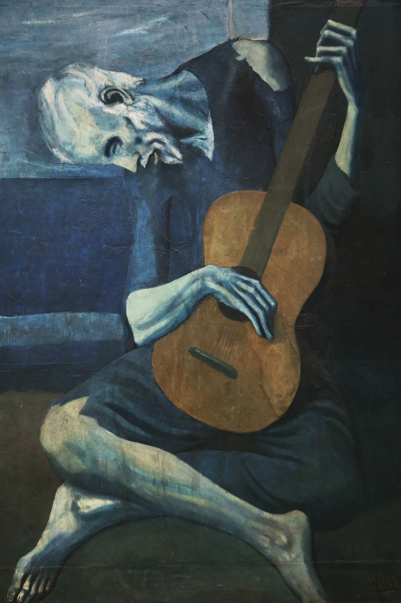
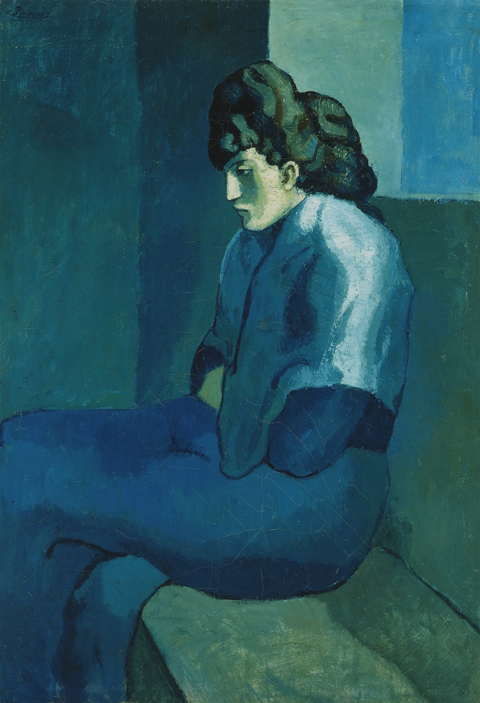
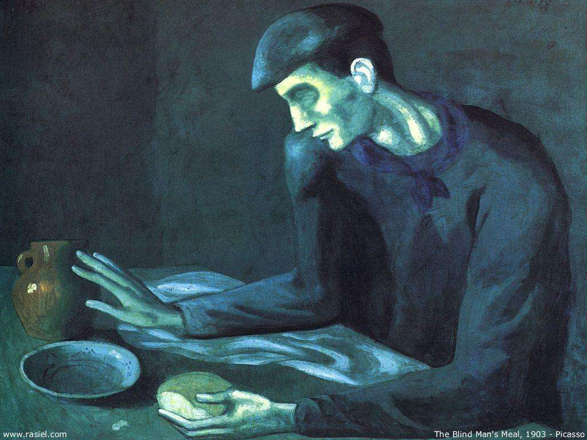
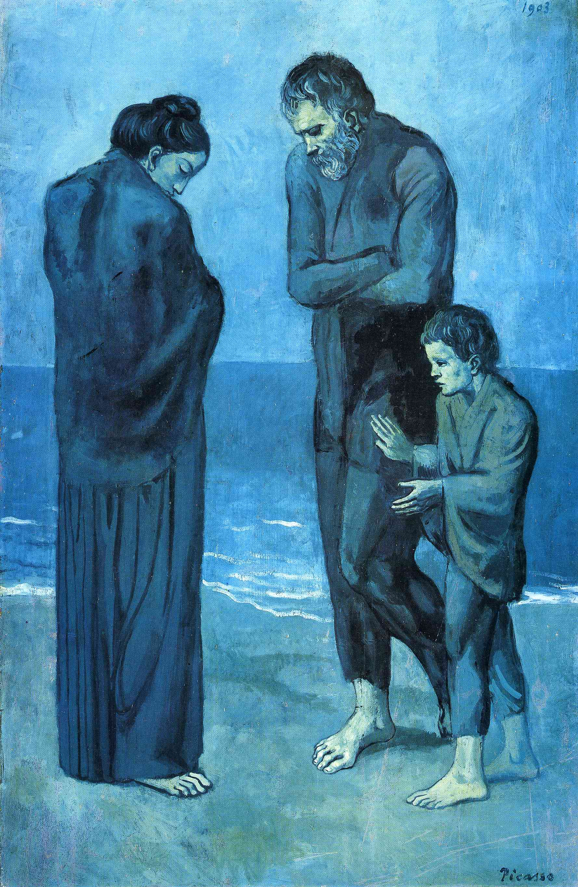
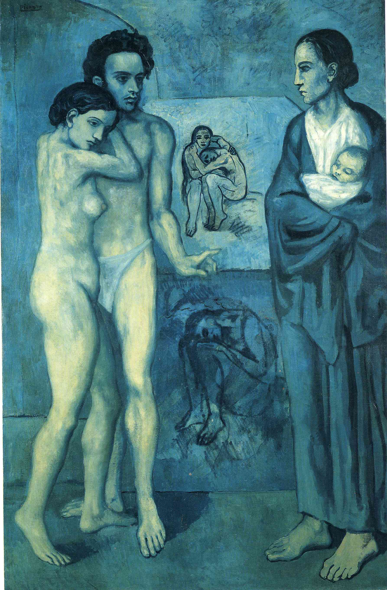
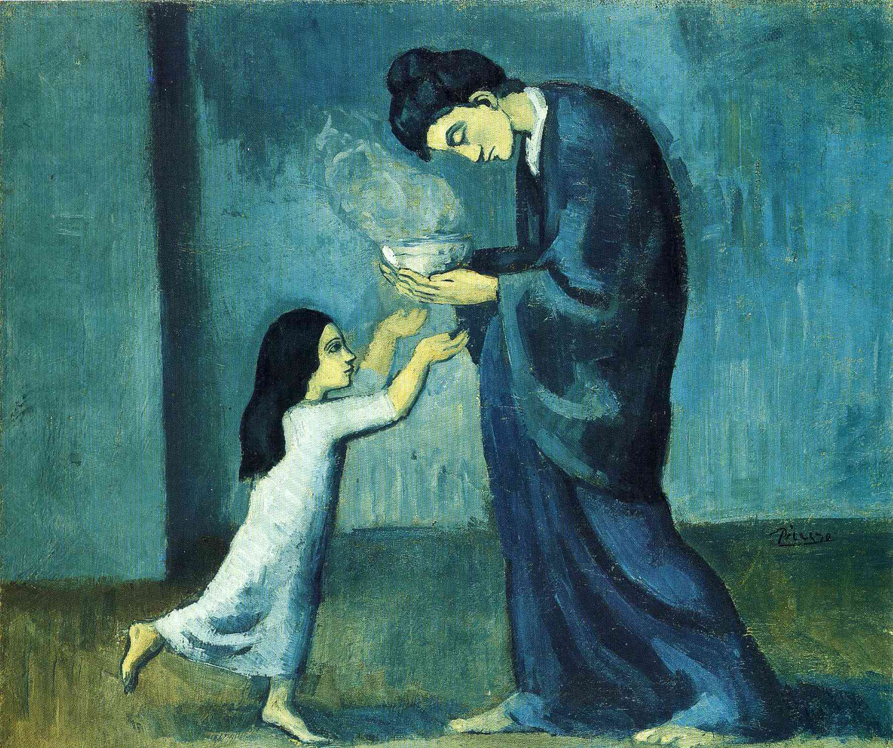
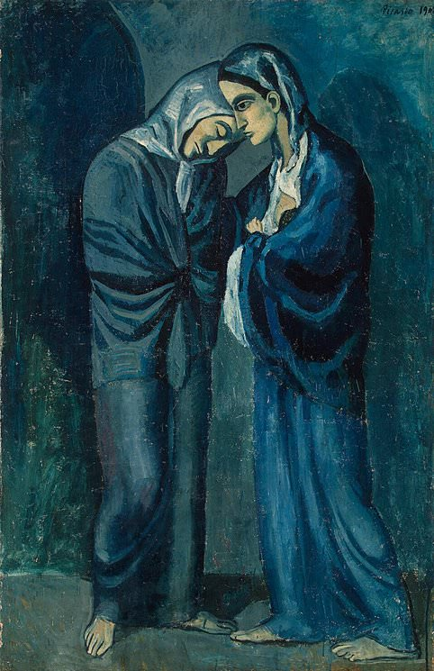
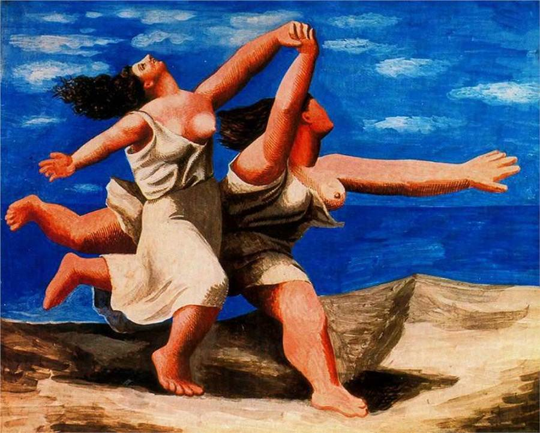

毕加索 Pablo Picasso – 老吉他手 Old Guitarist
文章目录
 Pablo Picasso, Old Guitarist, 1903, Chicago Art Institute
毕加索是20世纪最成功的艺术家，名利兼收。毕加索高寿享年91岁，他的艺术创作期同样高寿长达75年，作品约15万件[1]：
- 13,500 绘画作品（paintings）
- 100,000 版画作品（graphic prints or engravings）
- 34,000 插画（book illustrations）
- 300 雕塑和陶艺（sculptures and ceramics）
纵观毕加索的作品，不同时期的风格有明显的特色，一般根据作品风格将他的艺术生涯分为不同时期：
- 早期 Early Life：1901年前
- 蓝色时期 Blue Period：1901~1904年
- 玫瑰时期 Rose Period：1904~1906年
- 非洲艺术和原始主义 African art and primitivism：1907–1909
- 立体主义 Analytic cubism: 1909–1912
- Synthetic cubism: 1912–1919
- 新古典主义和超现实主义 Neoclassicism and surrealism: 1919–1929
- The Great Depression to MoMA exhibition: 1930–1939
- 二战和40年代后期 World War II and late 1940s: 1939–1949
- 晚期 Later works to final years: 1949–1973
在蓝色时期，20岁的毕加索只身游历在西班牙巴塞罗纳和法国巴黎，除了真切的孤独，还有周遭不同的苦难。 他画乞丐、画妓女、画难民、画盲人，他画贫穷、画忧郁、画穷困、画命运。年青的毕加索用大面积的灰蓝、灰绿表达他所见所感。
 Pablo Picasso, 1902–03, Femme assise (Melancholy Woman), oil on canvas, 100 x 69.2 cm, Detroit Institute of Arts, Michigan
 Picasso, The Blindman’s Meal, 1903, The Metropolitan Museum of Art
 Pablo Picasso, 1903, The Tragedy, National Gallery of Art, Washington, D.C.
 Pablo Picasso, La Vie, 1903, 196.5 x 128.5cm, Cleveland Museum of Art (CMA), Cleveland, OH, US
 Pablo Picasso, 1902–03, La soupe (The soup), oil on canvas, 38.5 x 46.0 cm, Art Gallery of Ontario, Toronto, Canada
 Picasso, The Two Sisters, 1902
1917年即将结束一战，毕加索已入中年，在意大利他参观了大量的文艺复兴艺术，受到这段经历的影响，开始尝试新古典主义的风格。
1922年的作品，两位长发女人赤脚奔跑在沙滩上，同样有大面积的蓝，这时的蓝映出的是晴朗的天、宁静的海。
 Picasso, Two Women Running on the Beach, 1922